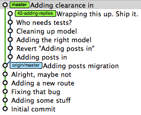
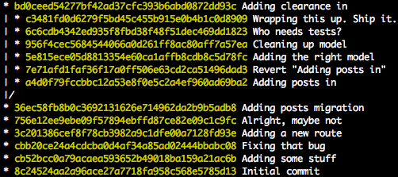

find unmerged commits
So you’re chugging along developing in a topic branch when you decide it’s about time that your work needs to brought back into your main development line. With graphical views like gitk or GitX, it’s really easy to figure out what hasn’t been merged in yet. Let’s say we have the following scenario:

If you want to do this from the command line, you’ve got a few options. One decent way of visualizing this is by using git log, which has plenty of awesome options available besides this one:
git log --pretty=oneline --graph --all

You could also use the range syntax in git log to get the commits that aren’t merged.
$ git checkout master $ git log ..42-adding-replies
git log master..42-adding-replies
There is another option though: git cherry. This does exactly what we want: tells us which commits aren’t in the branch specified. So if I was on the master branch and I ran:
$ git cherry -v master 42-adding-replies + a4d0f79fccbbc12a53e8f0e5c2a4ef960ad69ba2 Adding posts in + 7e71afd1faf36f17a0ff506e63cd2ca51496dad3 Revert "Adding posts in" + 5e815ece05d8813354e60ca1affb8cdb8c5d78fc Adding the right model + 956f4cec5684544066a0d261ff8ac80aff7a57ea Cleaning up model + 6c6cdb4342ed935f8fbd38f48f51dec469dd1823 Who needs tests? + c3481fd0d6279f5bd45c455b915e0b4b1c0d8909 Wrapping this up. Ship it.
So what we just did was asked Git what’s not in master that’s in 42-adding-replies branch. Just like in the images above it’s simple to see what needs to get merged in still. The -v option will print out the commit message along with the SHA hash so it’s easier to figure out what exactly you’re looking at. This command also takes in a third, optional argument for picking a starting point or limit. So, if we wanted to just check everything after commit 7e71af, you’d get this:
$ git cherry -v master 42-adding-replies 7e71af + 5e815ece05d8813354e60ca1affb8cdb8c5d78fc Adding the right model + 956f4cec5684544066a0d261ff8ac80aff7a57ea Cleaning up model + 6c6cdb4342ed935f8fbd38f48f51dec469dd1823 Who needs tests? + c3481fd0d6279f5bd45c455b915e0b4b1c0d8909 Wrapping this up. Ship it.
As you can see, that skipped the first two commits in our topic branch. If you wanted to check what hasn’t been merged into an upstream branch when not actually on the upstream branch, it’s a little simpler:
$ git checkout 42-adding-replies $ git cherry master + a4d0f79fccbbc12a53e8f0e5c2a4ef960ad69ba2 + 7e71afd1faf36f17a0ff506e63cd2ca51496dad3 + 5e815ece05d8813354e60ca1affb8cdb8c5d78fc + 956f4cec5684544066a0d261ff8ac80aff7a57ea + 6c6cdb4342ed935f8fbd38f48f51dec469dd1823 + c3481fd0d6279f5bd45c455b915e0b4b1c0d8909
One really neat aspect about this command is that it actually compares the changesets instead of the commit SHA, since you may have modified the commit by adding a signoff or changed its parents in some manner. In any case, you can depend on this command to tell you what hasn’t been merged into your upstream branch. Also, don’t confuse this with cherry-pick, which does something totally different.